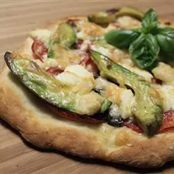

Chicken Avocado Pizza Recipe
A deliciously different California inspired pizza made with avocado spread in place of
pizza sauce, and topped with chicken and Monterey Jack cheese. Great for a light meal.
After that, you can serve it up on salad greens, scoop it into pita bread or half an avocado,
roll it up in a tortilla for a wrap, or serve it hot in a quesadilla or chicken melt.
Ingredients
- 2 avocados - peeled, pitted and diced
- 1 tablespoon chopped fresh cilantro
- 1 tablespoon fresh lime juice, or to taste
- salt to taste
- 1 clove garlic, peeled
- 4 (7 inch) pre-baked pizza crusts
- 1 tablespoon olive oil
- 1 cup chopped cooked chicken breast meat
- 1 cup cherry tomatoes, quartered
- 1 cup shredded Monterey Jack cheese
- 1 pinch cayenne pepper
Steps
-
Preheat your oven's broiler. If you have a pizza stone, place it in the oven while it preheats.
-
In a food processor, combine the avocados and cilantro. Puree while adding lime juice and salt to taste. Cover, and set aside.
-
Slice the garlic clove in half, and rub the cut side onto the tops of the pizza crusts for flavor. Brush both sides of the crusts with olive oil. Spread the avocado mixture thickly over the top of each crust, then arrange chicken and tomatoes on top. Sprinkle with cheese, and season lightly with cayenne pepper. Place pizzas on a baking sheet if you do not have a pizza stone.
-
Broil for about 5 minutes in the preheated oven, or until the cheese has just melted and the crust is lightly toasted.
- Enjoy!